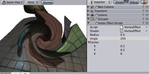

Previous
Previous
Vortex image effect distorts the rendered image. Similar to Twirl, it distorts the image in a circular region.
As with all image effects, it is available in Unity Pro only. Make sure to have the Pro Standard Assets installed.
|  |
Vortex image effect applied to the scene
| Property: | Function: |
|---|---|
| The radius of the circle where image distortion takes place. Radius of 0.5 is half the height of the screen (so the circle's diameter is whole screen in height). | |
| Controls the amount of distortion applied. | |
| X/Y position the distortion area on the screen, Z is ignored. |
Tips:
- You need to attach the image effect to the camera while edit mode. To see the effect you have to go into playmode afterwards.
Vortex works on graphics cards with support for pixel shaders (2.0). E.g. GeForce FX 5200 or Radeon 9500 and up. All image effects automatically disable themselves when they can not run on an end-users graphics card.